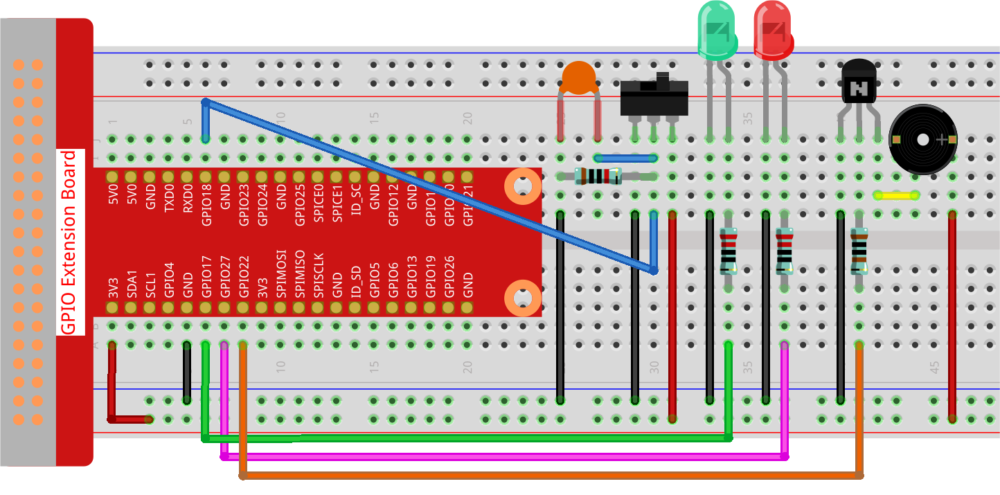

注釈
こんにちは、SunFounderのRaspberry Pi & Arduino & ESP32愛好家コミュニティへようこそ！Facebook上でRaspberry Pi、Arduino、ESP32についてもっと深く掘り下げ、他の愛好家と交流しましょう。
参加する理由は？
エキスパートサポート：コミュニティやチームの助けを借りて、販売後の問題や技術的な課題を解決します。
学び＆共有：ヒントやチュートリアルを交換してスキルを向上させましょう。
独占的なプレビュー：新製品の発表や先行プレビューに早期アクセスしましょう。
特別割引：最新製品の独占割引をお楽しみください。
祭りのプロモーションとギフト：ギフトや祝日のプロモーションに参加しましょう。
👉 私たちと一緒に探索し、創造する準備はできていますか？[ここ]をクリックして今すぐ参加しましょう！
3.1.10 アラームベル
概要
このプロジェクトでは、手動アラームデバイスを作成します。トグルスイッチをサーミスタまたは光感知センサーに置き換えて、温度アラームまたは光アラームを作成できます。
必要なコンポーネント
このプロジェクトでは、以下のコンポーネントが必要です。
{kind=link}
回路図

実験手順
ステップ 1: 回路を組み立てます。
ステップ 2: ディレクトリを変更します。
cd ~/davinci-kit-for-raspberry-pi/python-pi5
ステップ 3: 実行します。
sudo python3 3.1.10_AlarmBell.py
プログラムを起動した後、トグルスイッチを右に切り替えると、ブザーからアラーム音が鳴ります。同時に、赤と緑のLEDが一定の頻度で点滅します。
コード
注釈
以下のコードを 修正/リセット/コピー/実行/停止 することができます。ただし、その前に davinci-kit-for-raspberry-pi/python-pi5 のソースコードパスに移動する必要があります。
#!/usr/bin/env python3
from gpiozero import LED, Button, TonalBuzzer
import time
import threading
# GPIOピン22にTonalBuzzerを初期化
BeepPin = TonalBuzzer(22)
# GPIOピン17と27にLEDを初期化
ALedPin = LED(17)
BLedPin = LED(27)
# GPIOピン18にボタンを初期化
switchPin = Button(18)
# ブザーとLEDの状態を管理するためのグローバルフラグ
flag = 0
def ledWork():
"""
フラグの状態に基づいてLEDの点滅パターンを制御します。
フラグがセットされている場合、ALedPinとBLedPinを交互に点滅させます。
フラグがセットされていない場合、両方のLEDをオフにします。
"""
while True:
if flag:
# LEDを交互に点滅
ALedPin.on()
time.sleep(0.5)
ALedPin.off()
BLedPin.on()
time.sleep(0.5)
BLedPin.off()
else:
# フラグがセットされていない場合、両方のLEDをオフにする
ALedPin.off()
BLedPin.off()
# 音楽の音符とその持続時間のリストとしてチューンを定義します
tune = [
('C4', 0.1), ('E4', 0.1), ('G4', 0.1),
(None, 0.1),
('E4', 0.1), ('G4', 0.1), ('C5', 0.1),
(None, 0.1),
('C5', 0.1), ('G4', 0.1), ('E4', 0.1),
(None, 0.1),
('G4', 0.1), ('E4', 0.1), ('C4', 0.1),
(None, 0.1)
]
def buzzerWork():
"""
フラグの状態に基づいてブザーを使って曲を演奏します。
フラグがセットされている場合のみ曲が演奏されます。
曲が演奏中にフラグが解除されると、曲が停止します。
"""
while True:
for note, duration in tune:
if flag == 0:
break
print(note) # 現在の音符をコンソールに出力
BeepPin.play(note) # 現在の音符を演奏
time.sleep(duration) # 音符の持続時間だけ一時停止
BeepPin.stop() # 曲の演奏後にブザーを停止
def main():
"""
ボタンの押下を監視してフラグの状態を更新します。
ボタンが押されるとフラグがセットされます。
"""
global flag
while True:
flag = 1 if switchPin.is_pressed else 0
try:
# ブザーとLED制御のスレッドを初期化して開始します
tBuzz = threading.Thread(target=buzzerWork)
tBuzz.start()
tLed = threading.Thread(target=ledWork)
tLed.start()
main()
except KeyboardInterrupt:
# プログラムが中断されたときにブザーを停止し、LEDをオフにします
BeepPin.stop()
ALedPin.off()
BLedPin.off()
コードの説明
このセグメントでは、遅延とスレッド処理の実装に必要なライブラリのインポートを行います。また、Raspberry Pi上のGPIOデバイスを制御するために、gpiozeroライブラリからLED、Button、およびTonalBuzzerクラスもインポートしています。
#!/usr/bin/env python3 from gpiozero import LED, Button, TonalBuzzer import time import threading
GPIOピン22にブザー、GPIOピン17と27にLED、GPIOピン18にボタンをセットアップします。ブザーとLEDの状態を管理するために、グローバルフラグも定義されています。
# GPIOピン22にTonalBuzzerを初期化 BeepPin = TonalBuzzer(22) # GPIOピン17と27にLEDを初期化 ALedPin = LED(17) BLedPin = LED(27) # GPIOピン18にボタンを初期化 switchPin = Button(18) # ブザーとLEDの状態を管理するためのグローバルフラグ flag = 0
この関数は、フラグの状態に応じてLEDの点滅を制御します。フラグが設定されている（1）場合、各LEDをオンとオフに交互に切り替えます。フラグが設定されていない（0）場合、両方のLEDをオフにします。
def ledWork(): """ フラグの状態に基づいてLEDの点滅パターンを制御します。 フラグがセットされている場合、ALedPinとBLedPinを交互に点滅させます。 フラグがセットされていない場合、両方のLEDをオフにします。 """ while True: if flag: # LEDを交互に点滅 ALedPin.on() time.sleep(0.5) ALedPin.off() BLedPin.on() time.sleep(0.5) BLedPin.off() else: # フラグがセットされていない場合、両方のLEDをオフにする ALedPin.off() BLedPin.off()
音楽の音符（周波数）と持続時間（秒）のシーケンスである「tune」が定義されています。
# 音楽の音符とその持続時間のリストとしてチューンを定義 tune = [ ('C4', 0.1), ('E4', 0.1), ('G4', 0.1), (None, 0.1), ('E4', 0.1), ('G4', 0.1), ('C5', 0.1), (None, 0.1), ('C5', 0.1), ('G4', 0.1), ('E4', 0.1), (None, 0.1), ('G4', 0.1), ('E4', 0.1), ('C4', 0.1), (None, 0.1) ]
フラグが設定されている場合に予め定義されたメロディを演奏します。演奏中にフラグが解除されると、演奏が停止します。
def buzzerWork(): """ フラグの状態に基づいてブザーを使って曲を演奏します。 フラグがセットされている場合のみ曲が演奏されます。 曲が演奏中にフラグが解除されると、曲が停止します。 """ while True: for note, duration in tune: if flag == 0: break print(note) # 現在の音符をコンソールに出力 BeepPin.play(note) # 現在の音符を演奏 time.sleep(duration) # 音符の持続時間だけ一時停止 BeepPin.stop() # 曲の演奏後にブザーを停止
ボタンの状態を確認し、フラグを設定または解除します。
def main(): """ ボタンの押下を監視してフラグの状態を更新します。 ボタンが押されるとフラグがセットされます。 """ global flag while True: flag = 1 if switchPin.is_pressed else 0
buzzerWorkとledWorkのスレッドを開始し、それらをメイン関数と同時に実行できるようにします。try: # ブザーとLED制御のスレッドを初期化して開始します tBuzz = threading.Thread(target=buzzerWork) tBuzz.start() tLed = threading.Thread(target=ledWork) tLed.start() main()
プログラムが中断されたときに、きれいに終了するように、ブザーを停止し、LEDをオフにします。
except KeyboardInterrupt: # プログラムが中断されたときにブザーを停止し、LEDをオフにします BeepPin.stop() ALedPin.off() BLedPin.off()